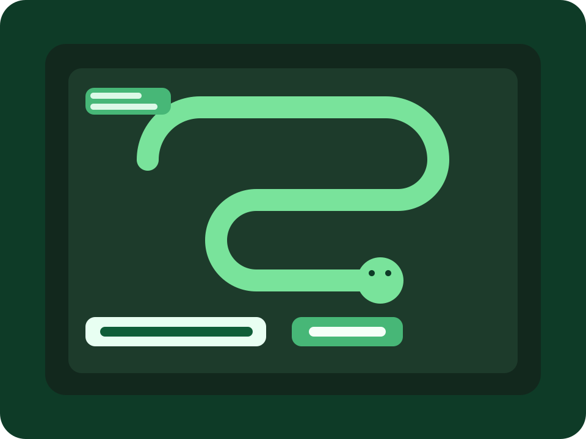

Bewerbung für Bechtle AG Freiburg
Systemadministration, Support und technische Struktur in einer professionellen Bewerbungswebsite.
Ich bewerbe mich für die Ausbildung zum Fachinformatiker für Systemintegration mit starkem Interesse an Systemadministration. Durch mein Praktikum bei Bechtle habe ich bereits Einblicke in interne Systemadministration, First-Level-Support, Hardware-Einrichtung, Cisco-Optimierung, virtuelle Maschinen und technische Abläufe im Arbeitsalltag bekommen. Diese Website zeigt meinen Werdegang und passende Projektbeispiele.
Visuelle Richtung
Grün und Weiß als ruhige, technische und strukturierte Markenwelt mit Fokus auf Klarheit, Zuverlässigkeit und IT-Nähe.

First-Level Support
Interne Systemadministration
Hardware-Einrichtung
Cisco
Virtuelle Maschinen
Rechnernetze
VS Code & Python
Service & Excel
Kurzprofil
Warum mein Profil gut zu Bechtle und zur Fachinformatik passt
Mein Interesse liegt klar im technischen Bereich. Besonders motiviert mich die Arbeit an Systemen, Supportfällen, Netzwerken, Hardware und sauber dokumentierten Abläufen. Ich arbeite strukturiert, lerne schnell und kann technische Themen ruhig und verständlich angehen.
Im Praktikum bei Bechtle habe ich bereits erlebt, wie wichtig interne Systemadministration, First-Level-Support, Hardware-Setup und klare Kommunikation im Tagesgeschäft sind. Dazu kommen ein Semester Informatik mit Python-Grundlagen sowie eigene Projekte in Python, Software-Konzepten und Service-Dokumentation, die mein technisches Verständnis weiter vertieft haben.
Erfahrung
Praxis, Unterricht und eigene Projekte greifen bei mir zusammen
Praktikum
Bechtle AG Freiburg
Einblicke in interne Systemadministration, First-Level-Support, Hardware für den Commerce-Shop, Cisco-Optimierung, virtuelle Maschinen und allgemeine technische Abläufe.
Programmierung
Python und VS Code
Grundlagen durch Unterricht, ein Semester Informatik und Projekte wie Snake, mit Fokus auf Logik, Struktur und saubere Umsetzung.
Dokumentation
Service und Excel
Erstellung und Strukturierung von Listen zu Kundenanfragen, Servicefällen und technischen Aufgaben.
Probleme strukturiert angehen
Ich arbeite gern nachvollziehbar: Ursache prüfen, sauber dokumentieren, verständlich kommunizieren und Lösung umsetzen.
Interesse an Rechnernetzen
Durch das Fach Rechnernetze habe ich Grundlagen zu Netzwerkstrukturen, Verbindungen und technischer Infrastruktur aufgebaut.
Technik und Logik verbinden
Von Python bis Plattform-Konzept: Ich finde es spannend, wenn Systeme, Code und klare Strukturen zusammenkommen.
Highlights
Was Bechtle in dieser Website direkt über mich sehen kann
Praktikum mit echtem IT-Bezug
Erfahrungen in Support, Systemadministration, Hardware-Einrichtung, Cisco-Optimierung und virtuellen Maschinen.
Python-Projekte und Softwarelogik
Snake in Python und ein Yeet-Plattform-Konzept zeigen, dass ich nicht nur Systeme nutze, sondern Technik auch logisch aufbauen kann.
Dokumentation und Excel-Struktur
Der Service-/Excel-Case zeigt, wie ich Anfragen, Prioritäten, Hardwarefälle und Status sauber strukturieren würde.
Portfolio
Passende technische Projekte für die Bewerbung bei Bechtle
4 Projekte gefunden
Support
Praktikum Bechtle Freiburg
Einblicke in interne Systemadministration, First-Level-Support, Hardware-Setup, Cisco-Optimierung und virtuelle Maschinen.
Entwicklung
Snake in Python
Klassisches Python-Projekt mit Spiel-Logik, Zustandsverwaltung, Schleifen und klarer Struktur in VS Code.
Entwicklung
Yeet Plattform-Prototyp
Konzept und Struktur einer kleinen Social-Media-Plattform mit Profil-, Feed- und Post-Logik als Softwareprojekt.
Keine Projekte passen zur aktuellen Suche.
Technische Themen
Welche Bereiche mich besonders interessieren
Systemadministration und Support
Service-Dokumentation und Excel-Struktur
Python, Logik und VS Code
Software- und Plattform-Struktur
FAQ über mich
Die wichtigsten Fragen für Bechtle schnell beantwortet
Weil mich Systeme, Support, Hardware, Netzwerke und technische Abläufe mehr reizen als reine Theorie. Ich arbeite gern direkt an Lösungen.
Weil ich dort im Praktikum bereits positive Einblicke bekommen habe und genau diese Mischung aus Technik, Support und professionellen Abläufen weiter vertiefen möchte.
Sie zeigen, dass ich technische Themen nicht nur interessant finde, sondern auch selbst strukturiert in Projekte, Dokumentation und Softwarelogik übersetze.
Einblicke in Support und Systemadministration, Grundlagen in Python und VS Code, Interesse an Netzwerken, Erfahrung mit Excel-Listen sowie eine strukturierte Arbeitsweise.